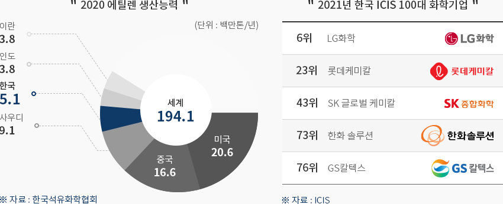
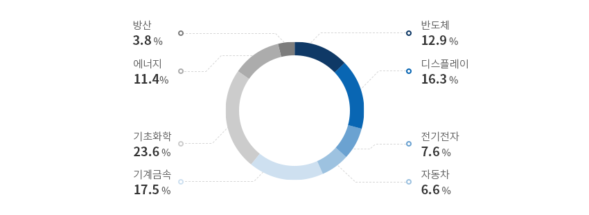
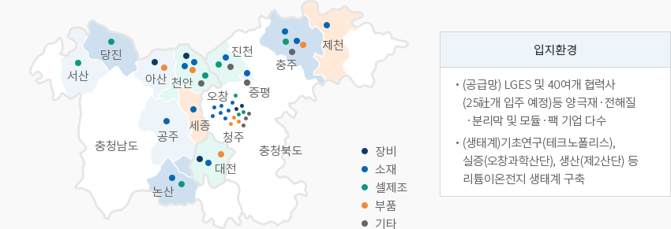
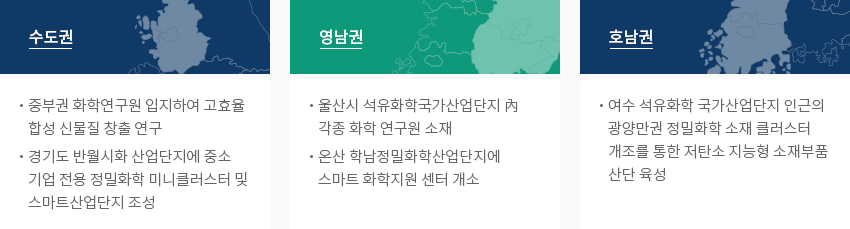
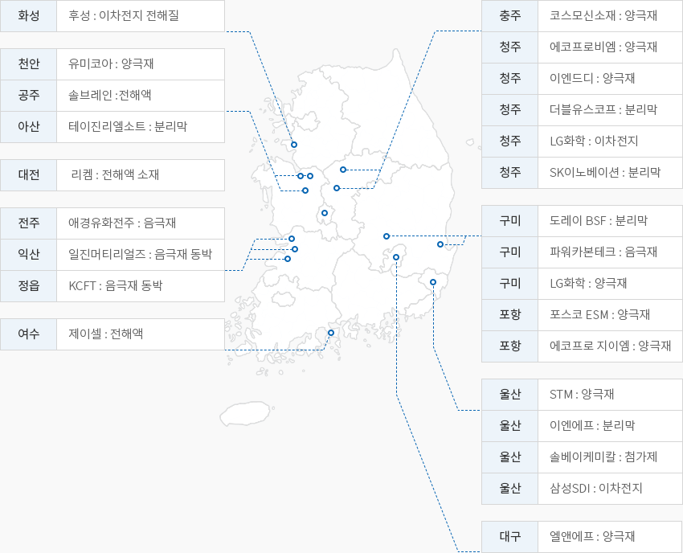
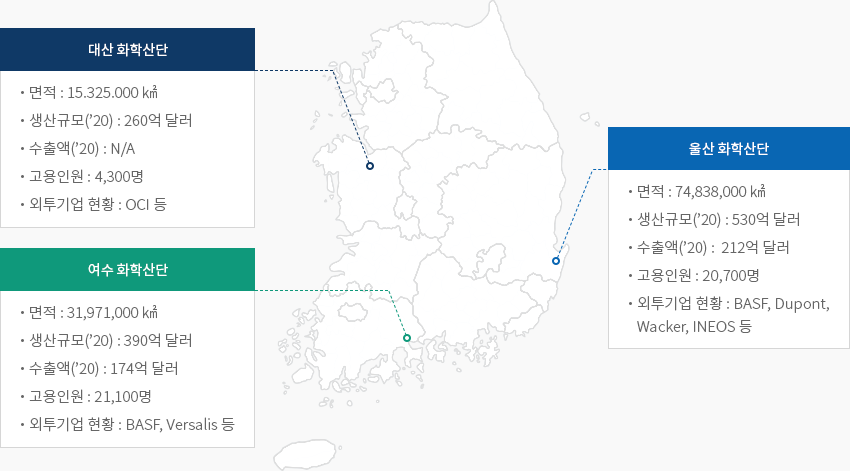

정밀화학
- Home
- Why KOREA
- 산업
- 정밀화학
정밀화학
Fine chemicals
-
세계 5위 화학산업 시장 내용닫기세계 5위 화학산업 시장한국의 화학산업은 출하액 기준 전 세계 5위를 차지하는 거대한 산업으로 약 1,580억 달러의 규모를 자랑하며
세계 시장의 4.0%를 점유하고 있다. 화학산업의 생산능력을 가늠하는 척도인 '에틸렌(Ethylene) 생산능력'에서
한국은 세계 4위로 2020년 세계 에틸렌 생산량 1억 9410만 톤 중 981.6만 톤(약 5.1%)을 생산하고 있다.
한국의 화학기업은 글로벌 랭킹인 ICIS Top 100 Chemical Companies(ICIS, September 2021) 중 LG화학,
롯데케미칼, SK 글로벌 케미칼, 한화 솔루션, GS칼텍스 등 5개 기업이 포함되어 있을 정도로 세계적인 수준을 자랑한다.
안정적이고 높은 수준의 원료를 충분히 공급받을 수 있는 후방산업을 보유한 한국의 정밀화학산업은
자본‧지식‧기술집약형 구조를 통하여 이차전지, 자동차, 디스플레이 등 다양한 국내 전방산업의 핵심소재 및 응용 소재를
생산하고 있다. 또한, 정밀화학산업은 다양하고 글로벌한 전방산업의 꾸준한 성장에 힘입어 지속적으로 성장 중에 있다.2020 에틸렌 생산능력 세계 194.1(단위: 백만톤/년)- 미국 20.6
- 중국 16.6
- 사우디 9.1
- 한국 5.1
- 이란 3.8
- 인도 3.8
※ 자료 : 한국석유화학협회
2021년 한국 ICIS 100대 화학기업- 6위: LG화학
- 23위: 롯데케미컬
- 43위: SK 글로벌 케미칼
- 73위: 한화솔루션
- 76위: GS칼텍스
※ 자료 : ICIS

-
다양한 전방산업 및 수출 증가를 바탕으로 지속적인 성장 기대 내용열기다양한 전방산업 및 수출 증가를 바탕으로 지속적인 성장 기대한국은 화학산업의 주요 전방산업인 자동차, 전기전자, 섬유, 건설, 플라스틱 등이 발달한 제조업 강국으로
이를 바탕으로 정밀화학산업 또한 함께 발전해왔다. 한국 정밀화학산업의 수출은 중국이 최대수출국으로
일본, 베트남, 홍콩 등의 동아시아 시장을 중심으로 성장하였으며,독일과 미국 등 동아시아 이외 지역의
수출도 증가하고 있다. 2020년 수출액은 생산 및 내수가 꾸준하게 성장함에 따라 299.5억 달러(MTI 22 기준)를
기록했으며, 수입액을 앞질렀다.글로벌 정밀화학 시장은 2021년 1,809.3억 달러에서 2025년에 2,387.4억 달러까지 성장하여 연평균 7.2%씩의
높은 성장세를 보여주고 있는 유망한 시장이다. 특히 디스플레이‧반도체‧LCD/LED‧이차전지(배터리) 소재 분야의
급속한 성장세가 두드러지면서 LG화학·SK이노베이션·롯데정밀화학·한화솔루션·금호석화 등 국내 기업의 투자가 확대되고 있다.또한 KAIST, POSTECH 등 화학관련 학과가 개설된 교육훈련기관은 총 348개로 매년 3만명 가량의 인재가 배출되며
소재부품장비의 인프라 구축 강화를 위해 국가연구 인프라를 18곳에서 51곳으로 확대할 계획이다. 특히 2015년 이후 화학분야
산업기술인력 중 연구원 및 시험원의 비중은 전체 화학산업 종사자 중 25.3%로 3년간 연평균 8.3% 증가하고 조작원 및 조립원 등의
생산관련 직종은 0.6% 감소하는 등 고급인력의 비중이 지속적으로 늘고 있다."한국 내 주요 전방산업 현황"한국 내 주요 전방산업 현황 표로 주요산업, 글로벌 위상과 주요기업 현황 정보제공 주요산업 글로벌 위상과 주요기업 현황 자동차 - 세계 5위의 자동차 생산국(351만대, ‘20년)
- 친환경차 수출이 27.6만대로 지속적으로 증가하며 전체 수출액의 19.1%를 기록하며 전기차, 수소차 등에 필요한 스페셜티화학소재 수요 안정 및 증가
시스템반도체 - 삼성전자 2030년까지 시스템 반도체 1위를 위하여 약 1,143억 달러 투입 계획
- 시스템 반도체의 복잡한 구조 및 정밀 설계로 스페셜티 화학소재 수요 급증
디스플레이 - 한국 디스플레이 시장 점유율 1위(’20년)
- OLED 패널은 3년연속 수출 100억달러를 달성하면서 디스플레이 전체 수출에서 차지하는 비중이 60%를 초과하는 등 세계시장 점유율 1위 유지
이차전지 - 국내 이차전지 중 IT용 소형 이차전지는 ‘11년부터 세계 1위를 유지하고 있으며 전기차용 중‧대형 이차전지도 중국을 바짝 추격중
- 글로벌 전기차 기업들에게 이차전지를 공급하는 기술력을 확보하고 있으며, 전기차용 세계시장 점유율에서 LG, 삼성, SK 등이 1위를 비롯한 상위권에 위치
※ 자료 : 한국석유화학협회, 한국무역협회
※ 주 : 생산(좌) / 내수(좌) / 수출(우) / 수입(우) -
대형 전방산업 수요에 대응한 해외 기업의 한국 진출 활발 내용열기대형 전방산업 수요에 대응한 해외 기업의 한국 진출 활발국내 진출한 글로벌 화학 기업은 대형 전방산업(반도체, 이차전지, 전기전자)의 수요에 대응한 고부가제품을 공급하는
케이스가 많으며, 외국인직접투자에서도 투자신고금액 기준 화학산업이 7억 7799만 달러로 제조업 내에서
가장 많은 투자를 받은 산업으로 기록되었다. 특히 아시아지역을 중심으로 투자가 활발히 일어났으며
그 중 중국이 3억 9천만 달러로 가장 많이 투자하였고 유럽 지역도 독일을 중심으로 많은 투자가 이루어졌다.일본, 독일, 스위스, 중국 등 다양한 국가에서 한국에 단독 법인이나 합작기업으로 진출하였으며, 기능성 코팅· 필름,
이차전지, 엔지니어링플라스틱, 반도체 등 다양한 분야에서 기업 활동이 활발하게 이루어지고 있다. 일본 도레이그룹의
자회사인 도레이첨단소재는 한국이 삼성전자, 현대자동차, SK 등 전자‧자동차 부문 글로벌 기업을 가지고 있는 등
한국 시장의 중요성을 인식하고 있으며, 2017년부터 2020년까지 총 1조원의 투자를 진행하였다. 또한 폴더블폰용 필름,
유기발광다이오드(OLED)용 소재, 차세대 디스플레이 고부가 필름소재 개발, 적층세라믹콘덴서(MLCC)을 위한
신소재 개발 등과 같은 미래 소재 개발에 투자와 고용을 늘릴 것으로 발표했다."주요 진출 해외 기업"주요 진출 해외 기업 표로 국가, 모기업명, 소재지, 주요 생산품목 정보제공 국가 모기업명 소재지 주요 생산품목  스위스
스위스
Oerlikon balzers 경기도 평택 PVD, PACVD, 베이스코팅, 코팅장비 일본 Lintec 경기도 평택 점접착 필름, 반도체용 필름 일본 Toray 경북 구미, 전라북도 군산 이차전지용 배터리세퍼레이터 필름 중국 GEM 경상북도 포항 리튬이차전지 양극소재 전구체 독일 BASF 경상북도 김천 POM(폴로옥시멜틸렌) 독일 Merck 경기도 안성시 반도체 패키징, 박막 코팅, 액정 소재  벨기에
벨기에
Umicore 충남 천안 이차전지 양극재 소재
벨기에
Solvay 전북 군산 타이어 제조용 첨단 친환경 실리카  미국
미국
Air Products 경기 평택 산업용 가스 제조 -
소재부품장비 산업 육성 강력 추진과 전방산업 발전 지원 내용열기소재부품장비 산업 육성 강력 추진과 전방산업 발전 지원한국 정부는 기업애로 해소 및 안정적 공급망 안정화를 위해 노력하고 있다. 소부장 정책을 통해
핵심전략기술 정보, 법률 분석 서비스 등을 지원하여 업들의 투자유치 전과정을 도와주며, 해외법인 인수 시
인수금액의 10% 세액공제 지원, M&A를 통한 기술확보 기업들에게 3년동안 최대 10억원까지 기술 내재화를 지원한다.
추후 사업인 “2021년 소재부품기술개발사업(2021.2.1)”의 신규 R&D 과제에서는 총 1,949.5억원이 지원되며
그 중 화학이 46개 과제, 460.1억원으로 가장 많은 예산 지원을 받는다.전방산업 육성 정책에서 정부는 이차전지 산업 발전을 위하여 “2030 이차전지 산업(K-Battery) 발전 전략(2021.7)”을
수립하였으며, 소부장 요소기술 개발을 위해 2030까지 민간에서 40.6조원을 투자하고, 대규모 예타를 추진하고 있다.
이차전지 핵심기술을 국가전략기술로 선정하여 세제지원을 강화하며 R&D에는 최대 40~50%, 시설투자에는 20%의 세액을
공제할 계획이다. 또한, 반도체산업을 위해 시스템반도체를 위한 수요연계 R&D(매년 300억원), 팹리스 전용펀드(1,000억원)
지원과 설비투자 세액공제 일몰연장 등을 지원하며, AI 반도체 등 차세대 반도체 기술개발에 향후 10년간 1조원 이상의
투자 계획을 수립했다."2021 소재부품기술개발사업 신규 R&D과제 산업별 예산"
2021 소재부품기술개발사업 신규 R&D과제 산업별 예산 통계로 구분, 과제수, 예산 정보제공 구분 반도체 디스 플레이 전기·전자 자동차 기계금속 기초화학 에너지 방산 합계 과제수 26 23 17 13 28 46 22 5 181 예산 (억원) 251.0 317.3 148.8 115.6 340.8 460.1 221.6 74.3 1,949.5 12.9% 16.3% 7.6% 6.0% 17.5% 23.6% 11.4% 3.8% 100.0% ※ 자료 : 산업통상자원부
※ 자료 : 2021 소재부품기술개발사업 -
권역별 정밀화학산업 클러스터 구축과 소부장 특화단지 지정 내용열기권역별 정밀화학산업 클러스터 구축과 소부장 특화단지 지정수도권, 영남권, 호남권으로 정밀화학산업의 클러스터를 구분할 수 있으며, 울산, 여수, 온산 등의
산업단지를 중심으로 정밀화학 클러스터들이 함께 위치하고 단지 내 화학 연구원, 화학지원 센터,
저탄소 지능형 소재부품 산단 등을 통해 지방정부의 지원이 이루어지고 있다.정부는 소재부품장비 특화단지 지정(2021.2.23.)을 통해 핵심 소부장 수요-공급기업 및 기반시설의
기반시설을 집적시키는 한편 클러스터로 육성하여 첨단산업의 세계공장화를 추진한다.
지정된 5개의 소부장 특화단지 중 용인반도체클러스터, 오창의 이차전지 산업단지, 천안‧아산의 디스플레이
산단 및 테크노밸 리 3곳이 화학산업의 전방산업인 만큼 밸류체인 분석을 통한 보완분야 R&D, 수출지원,
전문연구인력 지원,투자유치 인센티브 제공 등의 다양한 지원이 계획되어 수행중이다.특히 이차전지 소부장 산업특화단지는 공급망 강화를 위한 양극재‧전해질‧분리막 등의
화학 기업이 다수 입지하며, 리튬이온전지 생태계가 구축되는 등의 활발한 기업 성장을 위한 지원이 마련되어있다."이차전지 소부장 특화단지 입지"입지환경- (공급망) LGES 및 40여개 협력사 (25社개 입주 예정)등 양극재ㆍ전해질ㆍ분리막 및 모듈ㆍ팩 기업 다수
- (생태계)기초연구(테크노폴리스), 실증(오창과학산단), 생산(제2산단) 등 리튬이온전지 생태계 구축
※ 자료 : 2030 이차전지 산업 발전 전략"권역별 주요내용"-
수도권
- 중부권 화학연구원 입지하여 고효율 합성 신물질 창출 연구
- 경기도 반월시화 산업단지에 중소기업 전용 정밀화학 미니클러스터 및 스마트산업단지 조성
-
영남권
- 울산시 석유화학국가산업단지 內 각종 화학 연구원 소재
- 온산 학남정밀화학산업단지에 스마트 화학지원 센터 개소
-
호남권
- 여수 석유화학 국가산업단지 인근의 광양만권 정밀화학 소재 클러스터 개조를 통한 저탄소 지능형 소재부품 산단 육성
"이차전지 공장 분포"-
화성
- 후성: 이차전지 전해질
-
충주
- 코스모신소재: 양극재
-
청주
- 에코프로비엠: 양극재
- 이엔드디: 양극재
- 더블유스코프: 분리막
- LG화학: 이차전지
- SK이노베이션: 분리막
-
천안
- 유미코아: 양극재
-
공주
- 솔브레인: 전해액
-
아산
- 테이진리엘소트: 분리막
-
대전
- 리켐: 전해액 소재
-
전주
- 애경유화전주: 음극재
-
익산
- 일진머티리얼즈: 음극재 동박
-
정읍
- KCFT: 음극재 동박
-
구미
- 도레이 BSF: 분리막
- 파워카본테크: 음극재
- LG화학: 양극재
-
포항
- 포스코 ESM: 양극재
- 에코프로 지이엠: 양극재
-
여수
- 제이셀: 전해액
-
울산
- STM: 양극재
- 이엔에프: 분리막
- 솔베이케미칼: 첨가제
- 삼성SDI: 이차전지
-
대구
- 엘엔에프: 양극재
※ 자료협조 : 산업연구원"국내 3대 화학산단 현황"대산 화학산단- 면적 : 15.325.000 ㎢
- 생산규모(’20) : 260억 달러
- 수출액(’20) : N/A
- 고용인원 : 4,300명
- 외투기업 현황 : OCI 등
울산 화학산단- 면적 : 74,838,000 ㎢
- 생산규모(’20) : 530억 달러
- 수출액(’20) : 212억 달러
- 고용인원 : 20,700명
- 외투기업 현황 : BASF, Dupont, Wacker, INEOS 등
여수 화학산단- 면적 : 31,971,000 ㎢
- 생산규모(’20) : 390억 달러
- 수출액(’20) : 174억 달러
- 고용인원 : 21,100명
- 외투기업 현황 : BASF, Versalis 등
※ 자료협조 : 한국석유화학협회(KPIA)"주요 투자사례"주요 투자사례 통계로 연도, 연번, 투자기업, 분야, 투자지역(국내), 투자 주요 이유 정보제공 연도 연번 투자기업 분야 투자지역
(국내)투자 주요 이유 2019 1 A社 (미국) 일반화학 충남 천안 산업용 가스 공장 증설 2 S社 (벨기에) 특수화학 전북 군산 친환경 타이어 소재 생산공장 증설 3 U社 (벨기에) 이차전지 충남 천안 이차전지 소재 생산공장 증설 2020 1 H社 (중국) 일반화학 전남 광양 알루미늄 공장 건설 (FTA 수출모델 활용) 2 T社 (일본) 특수화학 경북 구미 탄소섬유 재료 등 첨단소재 공장 증설 3 N社 (중국) 이차전지 충북 충주 이차전지 양극재 공장 신설 2021 1 A社 (호주) 전략자원 충북 오창 희토류 및 희속금속 공장 신설국내 JV 설립을 통한 2 R社 (미국) 특수화학 전남 여수 친환경 접착제 공장 신설국내 JV 설립을 통한 3 H社 (중국) 이차전지 전남 광양 배터리 재활용 공장 신설


Invest KOREA담당자
화학/소재 PM
김승현
기간산업유치팀
T.+82-2-3460-7729
입지정보 추천
산업단지 정보
[충청북도 충주시] 만정일반산업단지
세부정보 바로가기를 클릭하시면 산업단지공단의 Smart K-Factory 서비스의 해당 정보 화면으로 이동합니다.
-
단지명만정일반산업단지
-
최초지정일2010.02.05
-
지정면적(km2)50,401
-
관리기관충청북도 충주시
-
인근철도역달천역
-
역과 거리(km)5
-
인근공항청주국제공항
-
공항과의 거리(km)51
-
공업용수 공급용량(톤/일)177(㎥/일)
-
소속 기초 지자체충청북도 충주시
-
인구수(명)210,304
산업단지 정보
[울산광역시 남구] 울산테크노일반산업단지(울산경제자유구역)
세부정보 바로가기를 클릭하시면 산업단지공단의 Smart K-Factory 서비스의 해당 정보 화면으로 이동합니다.
-
단지명울산테크노일반산업단지(울산경제자유구역)
-
최초지정일2013.06.20
-
지정면적(km2)1,286,977
-
관리기관울산광역시
-
인근철도역태화강역
-
역과 거리(km)9
-
인근공항울산공항
-
공항과의 거리(km)15
-
공업용수 공급용량(톤/일)2614(㎥/일)
-
소속 기초 지자체울산광역시 남구
-
인구수(명)1,140,310
산업단지 정보
[전라북도 군산시] 임피농공단지
세부정보 바로가기를 클릭하시면 산업단지공단의 Smart K-Factory 서비스의 해당 정보 화면으로 이동합니다.
-
단지명임피농공단지
-
최초지정일2011.06.20
-
지정면적(km2)239,156
-
관리기관전라북도 군산시
-
인근철도역대야역
-
역과 거리(km)7
-
인근공항군산공항
-
공항과의 거리(km)31
-
공업용수 공급용량(톤/일)426(㎥/일)
-
소속 기초 지자체전라북도 군산시
-
인구수(명)267,982
산업단지 정보
[충청남도 예산군] 예산신소재일반산업단지
세부정보 바로가기를 클릭하시면 산업단지공단의 Smart K-Factory 서비스의 해당 정보 화면으로 이동합니다.
-
단지명예산신소재일반산업단지
-
최초지정일2011.06.16
-
지정면적(km2)483,670
-
관리기관충청남도 예산군
-
인근철도역신례원역
-
역과 거리(km)22
-
인근공항청주국제공항
-
공항과의 거리(km)87
-
공업용수 공급용량(톤/일)788(㎥/일)
-
소속 기초 지자체충청남도 예산군
-
인구수(명)78,420
산업단지 정보
[부산광역시 기장군] 부산신소재일반산업단지
세부정보 바로가기를 클릭하시면 산업단지공단의 Smart K-Factory 서비스의 해당 정보 화면으로 이동합니다.
-
단지명부산신소재일반산업단지
-
최초지정일2013.01.16
-
지정면적(km2)255,229
-
관리기관부산경제진흥원
-
인근철도역부산역
-
역과 거리(km)47
-
인근공항김해국제공항
-
공항과의 거리(km)48
-
공업용수 공급용량(톤/일)0.27(㎥/일)
-
소속 기초 지자체부산광역시 기장군
-
인구수(명)172,288
산업단지 정보
[전라남도 목포시] 세라믹일반산업단지
세부정보 바로가기를 클릭하시면 산업단지공단의 Smart K-Factory 서비스의 해당 정보 화면으로 이동합니다.
-
단지명세라믹일반산업단지
-
최초지정일2009.06.05
-
지정면적(km2)116,361
-
관리기관전라남도 목포시
-
인근철도역목포역
-
역과 거리(km)5
-
인근공항무안국제공항
-
공항과의 거리(km)36
-
공업용수 공급용량(톤/일)-
-
소속 기초 지자체전라남도 목포시
-
인구수(명)226,875